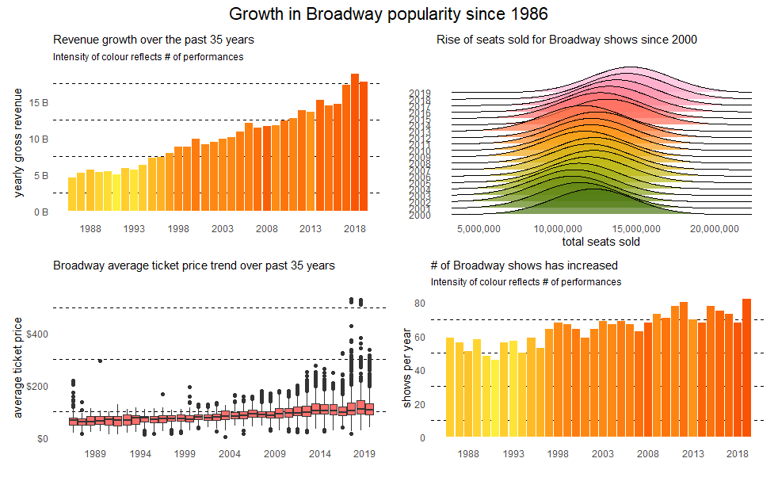

Week 18 of TidyTuesday datasets focuses on Broadway and provides us with 4 separate datasets:
grosses which has the main bulk of the overall data, including weekly gross, show name, theatre name and average ticket price
synopses which shows the synopsis of the shows - going to forget about this for the sake of this article
cpi which shows consumer price index - we can use this to adjust our money figures for inflation
pre_1985_starts which lists the shows that started before 1985
The main dataset I’m interested in is grosses so let’s see what’s in there:
glimpse(grosses_raw)## Rows: 47,524
## Columns: 14
## $ week_ending <date> 1985-06-09, 1985-06-09, 1985-06-09, 1985-06-0...
## $ week_number <dbl> 1, 1, 1, 1, 1, 1, 1, 1, 1, 1, 1, 1, 1, 1, 1, 1...
## $ weekly_gross_overall <dbl> 3915937, 3915937, 3915937, 3915937, 3915937, 3...
## $ show <chr> "42nd Street", "A Chorus Line", "Aren't We All...
## $ theatre <chr> "St. James Theatre", "Sam S. Shubert Theatre",...
## $ weekly_gross <dbl> 282368, 222584, 249272, 95688, 61059, 255386, ...
## $ potential_gross <lgl> NA, NA, NA, NA, NA, NA, NA, NA, NA, NA, NA, NA...
## $ avg_ticket_price <dbl> 30.42, 27.25, 33.75, 20.87, 20.78, 31.96, 28.3...
## $ top_ticket_price <lgl> NA, NA, NA, NA, NA, NA, NA, NA, NA, NA, NA, NA...
## $ seats_sold <dbl> 9281, 8167, 7386, 4586, 2938, 7992, 10831, 567...
## $ seats_in_theatre <dbl> 1655, 1472, 1088, 682, 684, 1018, 1336, 1368, ...
## $ pct_capacity <dbl> 0.7010, 0.6935, 0.8486, 0.8405, 0.5369, 0.9813...
## $ performances <dbl> 8, 8, 8, 8, 8, 8, 8, 8, 8, 8, 8, 8, 8, 9, 0, 8...
## $ previews <dbl> 0, 0, 0, 0, 0, 0, 0, 0, 0, 0, 0, 0, 0, 0, 8, 0...There’s a lot of great data in there - I want to create a few things including a patchwork that gives us a quick look into how Broadway shows have performed over the last 35 years, a dashboard (mainly because I’ve been wanting to try flexdashboard and tidymetrics!) and a quick race bar chart (though I don’t think this’ll be great.)
Cleaning the data
For me, the main columns of interest are week_ending, weekly_gross, weekly_gross_overall, avg_ticket_price, seats_sold, pct_capacity and we’ll have to use performances and previews to clean up the data. I also want to use the tidymetrics package to add in some additional date columns like quarters, years, and would like a rolling average (not sure how long yet). To do that we need to rename the column week_ending to date and then use cross_by_periods. Before adding in any additional columns I want to clean the data though so let’s:
Rename week_ending to date
Make sure there are no 0’s in any of the numerical columns as this will affect our average
Account for inflation (I’m going to cut off the data at the end of 2019 so will use last week of 2019)
grosses <- grosses_raw %>%
rename(date = week_ending) %>%
mutate_at(vars(weekly_gross:pct_capacity),
~ ifelse(performances + previews == 0 | . == 0, NA, .))
# quick check to see how many NAs there are now
str(map(grosses, ~ sum(is.na(.))))## List of 14
## $ date : int 0
## $ week_number : int 0
## $ weekly_gross_overall: int 0
## $ show : int 0
## $ theatre : int 0
## $ weekly_gross : int 125
## $ potential_gross : int 47524
## $ avg_ticket_price : int 125
## $ top_ticket_price : int 47524
## $ seats_sold : int 125
## $ seats_in_theatre : int 88
## $ pct_capacity : int 133
## $ performances : int 0
## $ previews : int 0With the easy bits done, we need to account for inflation. This requires a few steps: dividing all the CPIs by the picked date (December 2019), converting weekly dates in grosses to monthly so we can merge the two together, mutate all of the columns in grosses that use dollars to be updated with the inflation rate.
cpi <- cpi_raw %>%
mutate(dec_2019_dollars = cpi[year_month == "2019-12-01"] / cpi)
grosses_clean <- grosses %>%
filter(year(date) > 1985 & year(date) < 2020) %>%
mutate(year_month = floor_date(date, unit = "month")) %>%
left_join(cpi, by = "year_month") %>%
mutate_at(
vars(
weekly_gross_overall,
weekly_gross,
potential_gross,
avg_ticket_price,
top_ticket_price
),
~ . * dec_2019_dollars
) %>%
select(-potential_gross, -top_ticket_price, -c(year_month:dec_2019_dollars)) %>%
mutate(year = year(date))Exploring
Now that we’ve done the initial data setup it’d be interesting to look at a few things. In particular I’d like to see:
How my favourite shows have performed over the years (Lion King & Phantom)
Has Broadway become more popular? In terms of both number of plays and attendance
What’s the price increase like (have adjusted for inflation above)
How’s the annual gross revenue?
 As mentioned before there are four metrics that can help us assess the popularity of Broadway shows over the last 35 years. Starting with the top-left plot there’s been a clear year-on-year growth with a peak happening in 2018. A few reasons for the decrease in growth in 2019 include Bruce Springsteen’s concert closed in 2018 and shows like Anastasia brought in a lot less money (44m to 9m for Anastaria). We’d expect revenue to go up as number of performances goes up but the fill shows that’s not necessarily the case. 2008, for example, had a lot of performances but that growth wasn’t reflected in revenue.
The top-right chart, seats sold, shows the average has gone up considerably. Can see a clear shift beginning in 2015 which is when Hamilton opened and as both Hamilton and Book of Mormon have been consistently sold out since the start of their run, it’s pushing number of seats sold up. It’s also interesting that The Lion King, despite it’s long run, is still consistently selling out 96-97% of its capacity.
The bottom left chart looks at the range of average ticket prices for shows throughout the years and Hamilton’s high prices (as shown further down in the post) are pushing up the averages. Most of the outliers belong to Hamilton and Book of Mormon, both of which charge much higher than average prices (and have crazy top prices!). The bottom right is a simple plot showing the number of unique shows has risen each year, showing there’s been an expansion throughout the years to accommodate all of these.
Just to emphasise that more performances generally mean more money.. but not always (as in 2008):
ggplot(performances_and_shows, aes(x = yearly_gross,
y = number_of_performances)) +
geom_point() +
labs(x = "# of shows",
y = "yearly revenue",
title = "More performances, more money?")
Specific shows
After looking more into what made Broadway grow over time I found that the top10 shows were contributing a lot to the overall growth. This is especially true for Hamilton and Book of Mormon, two shows that have driven up the average ticket price for shows and have also set a gold standard for selling out consistently! I wanted to create a quick dashboard with flexdashboard so the graphs below will be reflected in that. You can find the dashboard here: link to dashboard
Going to start with adding in the periods and rolling averages using tidymetrics to see if it’ll give us some good insights. As shown by David Robinson in a previous tidy tuesday (think it was on beer!) we can use both cross_by_dimensions which will add an ‘All’ to our data (in this case in our show column) and cross_by_periods where we can determine what periods to add into the data and what kind of window to summarise them by:
top_shows <- grosses_clean %>%
group_by(show) %>%
summarise(total_gross = sum(weekly_gross, na.rm = TRUE)) %>%
arrange(desc(total_gross)) %>%
ungroup() %>%
head(10) %>%
select(show) %>%
pull()
grosses_summarised <- grosses_clean %>%
filter(show %in% top_shows) %>%
cross_by_dimensions(show) %>%
cross_by_periods(c("month", "quarter", "year"),
windows = 28) %>%
summarise(
usd_gross = sum(weekly_gross, na.rm = TRUE),
avg_ticket_price = mean(avg_ticket_price, na.rm = TRUE),
nb_seats_sold = sum(seats_sold, na.rm = TRUE),
pct_capacity = mean(pct_capacity, na.rm = TRUE)
) %>%
ungroup() %>%
mutate(year = year(date))grosses_summarised %>%
filter(period == "quarter",
show != "All") %>%
mutate(show = fct_reorder(show, avg_ticket_price)) %>%
ggplot(aes(x = avg_ticket_price,
y = show,
fill = show)) +
geom_density_ridges(scale = 4, size = 0, alpha = 0.7) +
scale_fill_igv() +
guides(fill = "none") +
labs(x = "Average ticket price",
y = "Show",
title = "Distribution of ticket prices for top 10 Broadway shows") +
theme(
plot.title = element_text(hjust = 1.5)
)
Hamilton is by far the most expensive show on average which explains why it’s already in the top 10 highest grossing theatres despite only opening in 2015. I’m guessing it’s also going to have one of the highest attendance rates so we’ll have a look at that after visualising total gross (which I already calculated above!):
grosses_summarised %>%
filter(show != "All",
period == "year") %>%
mutate(show = fct_reorder(show, usd_gross)) %>%
ggplot(aes(x = date,
y = usd_gross,
fill = show)) +
geom_col() +
coord_flip() +
scale_fill_igv() +
scale_x_date(date_breaks = "5 years", date_labels = "%Y") +
scale_y_continuous(labels = scales::dollar_format()) +
theme(
legend.text = element_text(size = rel(0.8)),
legend.title = element_blank(),
legend.position = "bottom"
) +
labs(x = NULL,
y = NULL,
title = "Total revenue by Broadway show")
It’s very obvious here the astronominal amounts Hamilton is bringing in. It slowly pops up in its first year but then continuously grows until 2019 where it slightly starts dropping off. Now that we have a stacked bar plot it also becomes clear where certain shows dropped off like Cats, which closed in 2000 despite still pulling in lots of money. It also had a reboot in 2016/2017 where people flocked to see it! The Book of Mormon is another relatively new show which has been massively successful and just like Hamilton, has a very high price tag.
grosses_summarised %>%
filter(period == "quarter",
show != "All") %>%
ggplot(aes(x = date,
y = pct_capacity,
colour = show)) +
geom_line(size = 1) +
scale_y_continuous(labels = scales::percent_format()) +
expand_limits(y = 0) +
scale_color_igv() +
labs(x = "",
y = "seats sold",
title = "Average % of sold seats per show") +
theme(
legend.text = element_text(size = rel(0.8)),
legend.title = element_blank(),
legend.position = "bottom"
)
Quite hard to interpret in a static plot with 10 data points but three things stand out immediately: 1) Hamilton consistently has above 100% seat capacity, 2) Book of Mormon has the same, and has been selling out since it started its run, 3) The Lion King has a surprisingly varying attendance rate. That said, out of all the long running shows, it still manages to sell out most of the time.
Now that we have our main graphs I’ll add them to flexdashboard and add a few score cards to show overall aggregations of the main metrics used. Lastly I wanted to add a quick bar chart race for top 10 shows throughout the years. I didn’t think it would turn out great (it didn’t) but the method might be interesting:
Bar chart race
show_yearly_gross <- grosses_clean %>%
select(date, show, weekly_gross) %>%
mutate(year = year(date)) %>%
group_by(year, show) %>%
mutate(yearly_gross = sum(weekly_gross)) %>%
ungroup() %>%
distinct(year, show, yearly_gross)
yearly_top10_shows_rev <- show_yearly_gross %>%
group_by(year) %>%
mutate(rank = rank(-yearly_gross),
Value_rel = yearly_gross/yearly_gross[rank==1],
Value_lbl = paste0(" ", round(yearly_gross/1e7))) %>%
group_by(show) %>%
filter(rank <= 10) %>%
ungroup()We now have all the data we need to set up a static plot for every single year:
shows_static <- ggplot(yearly_top10_shows_rev,
aes(x = rank,
group = show,
fill = as.factor(show),
colour = as.factor(show))) +
geom_tile(aes(y = yearly_gross / 2,
height = yearly_gross,
width = 0.9), alpha = 0.8, colour = NA) +
geom_text(aes(y = 0, label = paste(show, " ")),
vjust = 0.2, hjust = 1) +
coord_flip(clip = "off", expand = FALSE) +
scale_y_continuous(labels = scales::comma) +
scale_x_reverse() +
guides(color = FALSE, fill = FALSE) +
theme(axis.line=element_blank(),
axis.text.x=element_blank(),
axis.text.y=element_blank(),
axis.ticks=element_blank(),
axis.title.x=element_blank(),
axis.title.y=element_blank(),
legend.position="none",
panel.background=element_blank(),
panel.border=element_blank(),
panel.grid.major=element_blank(),
panel.grid.minor=element_blank(),
panel.grid.major.x = element_line( size=.1, color="grey" ),
panel.grid.minor.x = element_line( size=.1, color="grey" ),
plot.title=element_text(size=25, hjust=0.5, face="bold", colour="grey", vjust=-1),
plot.subtitle=element_text(size=18, hjust=0.5, face="italic", color="grey"),
plot.caption =element_text(size=8, hjust=0.5, face="italic", color="grey"),
plot.background=element_blank(),
plot.margin = margin(2,2, 2, 4, "cm"))shows_static +
transition_time(year)
library(gifski)
anim = shows_static +
transition_states(year,
transition_length = 8, state_length = 68) +
view_follow(fixed_x = TRUE) +
labs(title = "Revenue per year : {closest_state}",
subtitle = "Top 10 Shows")
animate(anim, 300, fps = 20, width = 1200, height = 1000, renderer = gifski_renderer("yearly_top10_shows_br.gif"))barchart race of highest grossing shows
Conclusion
I really liked this TidyTuesday dataset, there’s a lot of data to play with. My main takeaway from all this:
I need to go see Hamilton and Book of Mormon - it’s incredible how they have both managed to ‘change the game’. The fact that their average seat price is so high and they are still constantly over capacity shows that the hype around these shows isn’t dying down
The Lion King and Wicked are both still doing very well. Wicked especially is impressive to me due to its very long run!
Tidymetrics is incredible - it makes it so much easier to quickly aggregate metrics
It’s really easy to set up a flexdashboard and I’ll definitely be using lots more of Patchwork in the future
All of the code can be found in the blog section on my GitHub